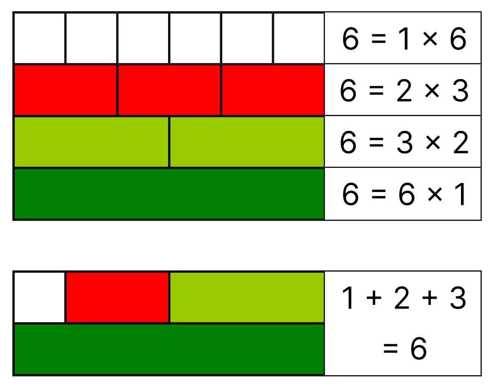

Numeros perfectos
Un número perfecto es un número entero positivo que es igual a la suma de sus divisores propios (todos los divisores excepto el propio número). En otras palabras, un número perfecto es aquel que es "amigo de sí mismo"
El matemático Euclides descubrió que los cuatro primeros números perfectos vienen dados por la fórmula 2 n − 1 ⋅ ( 2 n − 1 )
Los matemáticos de la Antigüedad hicieron muchas suposiciones sobre los números perfectos basándose en los cuatro que ya conocían. Muchas de estas suposiciones han resultado ser falsas. Una de ellas era que, como 2, 3, 5 y 7 eran precisamente los cuatro primeros números primos, el quinto número perfecto se obtendría con n = 11, el quinto número primo.
Leonhard Euler demostró en el siglo XVIII que todos los números perfectos pares se generan a partir de la fórmula que ya descubrió Euclides: Teorema de Euclides-Euler.
